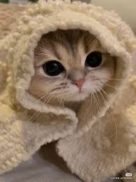
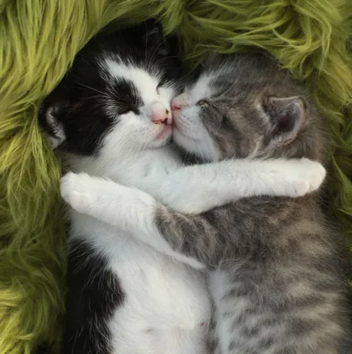
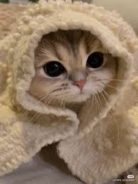
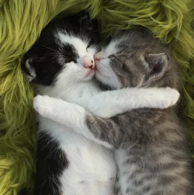

Маленький серый котик сидел у окна, грустно глядя на пролетающие мимо капли дождя. Его большие, обычно яркие глаза были полны тоски. Он не понимал, почему мир снаружи такой мокрый и холодный, и почему никто не хочет поиграть с ним. Его пушистый хвост медленно двигался из стороны в сторону, а лапки мягко касались холодного стекла. Котик скучал по солнечным дням, когда можно было весело гоняться за солнечными зайчиками или забавно прыгать по траве. Но сейчас небо было серым, а на душе у котика было так же мрачно. Он тихо вздохнул и свернулся клубочком на подоконнике, ощущая, как капельки дождя шепчут ему свои печальные истории. В этот момент ему казалось, что его маленький мир тоже промок насквозь, как и улица за окном. Но, несмотря на грусть, в душе котика жила надежда. Он знал, что дождь не будет длиться вечно, и вскоре снова выглянет солнце, согревая его маленькое сердечко.
 


